가스기사 (2011-08-21 기출문제)
1과목: 가스유체역학
1. 기체 수송 장치 중 일반적으로 압력이 가장 높은 것은?
- 팬
- 송풍기
- 압축기
- 진공펌프
(정답률: 84%)

2. 음속을 C, 물체의 속도를 V라고 할 때 Mach 수는?
- V/C
- V/C2
- C/V
- C2/V
(정답률: 80%)
3. 두 평판 사이에 유체가 있을 때 이동 평판을 일정한 속도 u로 운동시키는데 필요한 힘 F에 대한 설명으로 틀린 것은?
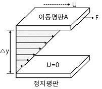
- 평판의 면적이 클수록 크다.
- 이동속도 u가 클수록 크다.
- 두 평판의 간격 △y가 클수록 크다.
- 평판 사이에 점도가 큰 유체가 존재할수록 크다.
(정답률: 71%)
4. 압력(p)이 높이(y)만의 함수일 때 높이에 따른 기체의 압력을 구하는 미분 방정식은＝ｒ로 주어진다. 일정온도 T＝300K를 유지하는 이상기체에서 y＝0에서의 압력이 1bar이면 y＝600m에서의 압력은 몇 bar인가? (단, r는 기체의 비중량을 나타내고, 기체상수 R＝287J/kg·K이다.)
- 0.917
- 0.934
- 0.952
- 0.971
(정답률: 45%)
5. 항력(drag force)에 대한 설명 중 틀린 것은?
- 물체가 유체 내에서 운동할 때 받는 저항력을 말한다.
- 항력은 물체의 형상에 영향을 받는다.
- 원통관 내의 거칠기에만 의존하는 힘이다.
- 유도항력은 항력의 일종이다.
(정답률: 79%)
6. 아음속 흐름에서 단면적이 감소할 경우 속도와 압력은 어떻게 변화하는?
- 속도는 증가하고 압력은 감소한다.
- 속도와 압력 모두 증가한다.
- 속도는 감소하고 압력은 증가한다.
- 속도와 압력 모두 감소한다.
(정답률: 72%)
7. 안지름이 0.2m인 실린더 속에 물이 가득 채워져 있고, 바깥지름이 0.18m인 피스톤이 0.⑤ m/s의 속도로 주입되고 있다. 이 때 실린더와 피스톤 사이의 틈으로 역류하는 물의 평균속도는 약 몇 m/s인가?
- 0.113
- 0.213
- 0.313
- 0.413
(정답률: 47%)
8. 교반을 하면 시간이 지남에 따라 동력소모가 증가하는 성질을 나타내는 것은?
- 의가소성(pseudopastic) 유체
- 뉴턴(Newton) 유체
- 요변성(thixotropic) 유체
- 레오펙틱(rheopsctic) 유체
(정답률: 48%)
9. 체적효율을 , 피스톤 단면적을 A[m2], 행정을 S[m], 회전수를 n[rpm] 이라 할 때 실제 송출랑 Q[m3/s]를 구하는 식은?
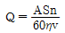
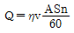
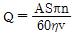
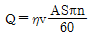
(정답률: 64%)
10. 어떤 유체의 점성계수는 0.245cP, 밀도는 1.2g/cm3이다. 이 유체의 동점계수는 약 몇 cm2/s인가?
- 2
- 0.2
- 0.02
- 0.002
(정답률: 39%)
11. 밀도 1.2kg/m3의 기체가 직경 8㎝인 관속을 10m/s로 흐르고 있다. 관의 마찰계수가 0.02 라면 1m 당 압력손실은 약 몇 kgf/m2인가?
- 0.153
- 1.53
- 15.3
- 153
(정답률: 60%)
12. 유체의 점성계수와 동점성계수에 관한 설명 중 옳은 것은? (단, M, L, T는 각각 질량, 길이, 시간을 나타낸다.)
- 상온에서의 공기의 점성계수는 물의 점성계수보다 크다.
- 점성계수의 차원은 ML-1T-1이다.
- 동점성계수의 차원은 L2T-2이다.
- 동점성계수의 단위에는 poise가 있다.
(정답률: 72%)
13. 압력의 단위 환산값으로 옳지 않은 것은?
- 1atm＝101.3kPa
- 760mmHg＝10.13bar
- 1torr＝1mmHg
- 1.013bar＝0.98kPa
(정답률: 64%)
14. 동력(power)과 같은 차원을 갖는 것은?
- 힘×거리
- 힘×가속도
- 압력×체적유랑
- 압력×질량유량
(정답률: 65%)
15. 압축성 유체의 유동에 대한 현상으로 옳지 않은 것은?
- 압축성 유체가 축소 유로를 통해 아음속에서 등엔트로피 과정에 의해 가속될 때 얻을 수 있는 최대 유속은 음속이다 .
- 압축성 유체가 아음속으로부터 초음속을 얻으려면 유로에 수축부, 목부분 및 확대부를 가져야 한다.
- 압축성 유체가 초음속으로 유동할 때의 특성을 임계특성(임계온도 T*, 임계압력 p* 등)이라 한다.
- 유체가 갖는 엔탈피를 운동에너지로 효율적으로 바꿀 수 있도록 설계된 유로를 노즐이라 한다.
(정답률: 50%)
16. 비압축성 유체가 매끈한 원형관에서 난류로 흐르며 Blasius 실험식과 잘 일치한다면 마찰계수와 레이놀즈수의 관계는?
- 마찰계수는 레이놀즈수에 비례한다.
- 마찰계수는 레이놀즈수에 반비례한다.
- 마찰계수는 레이놀즈수의 1/4승에 비례한다.
- 마찰계수는 레이놀즈수의 1/4승에 반비례한다.
(정답률: 59%)
17. 내경이 0.1m인 원통형 관 속을 비중 1.0, 점도 0.001Pa·s의 물이 평균유속 3.0m/s로 수송되고 있다. 이때의 Reynolds 수는?
- 3×103
- 3×104
- 3×105
- 3×106
(정답률: 53%)
18. 축류펌프의 특징에 대해 잘못 설명한 것은?
- 가동익(가동날개)의 설치각도를 크게 하면 유량을 감소시킬 수 있다.
- 비속도가 높은 영역에서는 원심펌프보다 효율이 높다.
- 깃의 수를 많이 하면 양정이 증가한다.
- 체절상태로 운전은 불가능하다.
(정답률: 70%)
19. 한변의 길이가 a인 정삼각형 모양의 단 면을 갖는 파이프 내로 유체가 흐른다. 이 파이프의 수력반경(hydraulic radius)은?
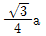
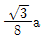
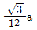
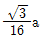
(정답률: 70%)
20. 미사일이 공기 중에서 시속 1260km로 날고 있을 때의 마하수는? (단, 공기의 기체상수 R은 287J/kg·K, 비열비는 1.4이며, 공기의 온도는 25℃이다.)
- 0.83
- 0.92
- 1.01
- 1.25
(정답률: 59%)
2과목: 연소공학
21. 연소범위에 대한 일반적인 설명으로 틀린 것은?
- 압력이 높아지면 연소범위는 넓어진다 .
- 온도가 올라가면 연소범위는 넓어진다.
- 산소농도가 증가하면 연소범위는 넓어진다.
- 불활성가스의 양이 증가하면 연소범위는 넓어진다.
(정답률: 80%)
22. 메탄을 공기비 1.3에서 연소시킨 경우 단열연소온도는 약 몇 K인가? (단, 메탄의 저발열량은 50MJ/kg, 배기가스의 평균비열은 1.293 kJ/kg.K이고 고온에서의 열분해는 무시하고 연소 전 온도는 25℃이다.)
- 1688
- 1820
- 1961
- 2234
(정답률: 44%)
23. Camot 기관이 12.6kJ의 열을 공급받고 5.2kJ의 열을 배출한다면 동력기관의 효율은 약 몇 %인가?
- 33.2
- 43.2
- 58.7
- 68.4
(정답률: 71%)
24. 중유의 고위발열량이 1⑤00kcal/kg이고, 수소의 함유량은 13%, 수분함량이 0.5% 일 때 저위발열량은 약 몇 kcal/kg인가?
- 9585
- 9795
- 9990
- 10487
(정답률: 66%)
25. 메탄 2 kg을 완전 연소하는데 필요한 이론 공기량은 약 몇 S m3인가? (단, 공기 중 산소는 21v%이다.)
- 8.89
- 11.59
- 13.33
- 26.67
(정답률: 55%)
26. 체적 300ℓ의 탱크 속에 습증기 58kg이 들어있다. 온도 350℃일 때 증기의 건도는 얼마인가? (단, 350℃ 온도 기준 포화 증기표에서 V＝1.7468×10-3m3/kg, V＝8.811×10-3m3/kg이다.)
- 0.485
- 0.585
- 0.693
- 0.793
(정답률: 33%)
27. 폴리트로픽변화에서 "pVn＝일정”일 때 폴리트로픽지수 n의 값이 ∞인 경우의 열역학적 변화는?
- 등온변화
- 등적변화
- 단열변화
- 폴리트로픽변화
(정답률: 60%)
28. 프로판가스 1Sm3 을 완전연소시켰을 때의 건조연소가스량은 약 몇 Sm3인가? (단, 공기 중의 산소는 21v%이다.)
- 10
- 16
- 22
- 30
(정답률: 68%)
29. 가스 화재 시 밸브 및 콕크를 잠그는 경 우 어떤 소화효과를 기대할 수 있는가?
- 질식소화
- 제거소화
- 냉각소화
- 억제소화
(정답률: 83%)
30. 분자량이 30인 어느 가스의 정압비열 이 0.516kJ/kg.K 이라고 가정할 때 이 가스의 비열비 k는 약 얼마인가?
- 1.0
- 1.4
- 1.8
- 2.2
(정답률: 50%)
31. 가스터빈 장치의 이상사이클을 Brayton 사이클이라고도 한다. 이 사이클의 효율을 증대시킬 수 있는 방법이 아닌 것은?
- 터빈에 다단팽창을 이용한다.
- 기관에 부딪치는 공기가 운동 에너지를 갖게 하므로 압력을 확산기에서 증가시킨다.
- 터빈을 나가는 연소 기체류와 압축기를 나가는 공기류 사이에 열교환기를 설치한다.
- 공기를 압축하는데 필요한 일은 압축과정을 몇 단계로 나누고 각 단 사이에 중간 냉각기를 설치한다.
(정답률: 59%)
32. 공기비에 대한 설명으로 옳은 것은?
- 연료 1kg당 완전연소에 필요한 공기량에 대한 실제 혼합된 공기량의 비로 정의된다.
- 연료 1kg 당 불완전연소에 필요한 공기량에 대한 실제 혼합된 공기량과 비로 정의된다.
- 기체 1m3당 실제로 혼합된 공기량에 대한 완전 연소에 필요한 공기량의 비로 정의된다.
- 기체 1m3당 실제로 혼합된 공기량에 대한 불완전연소에 필요한 공기량의 비로 정의된다.
(정답률: 76%)
33. 다음 [그림]은 오토사이클 선도이다. 계로부터 방출되는 과정은?
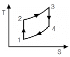
- 1→2 과정
- 2→3 과정
- 3→4 과정
- 4→1 과정
(정답률: 66%)
34. 에탄올(C2H5OH)이 이론산소량의 150% 와 함께 정상적으로 연소된다. 반응물은 298K로 연소실에 들어가고 생성물은 냉각되어 338K, 0.1 MPa 상태로 연소실을 나간다. 이 때 생성물 중 액체상태의 물(H2O)은 몇 kmol이 생성되는가? (단, 338K, 0.1MPa일 때 H2O의 증기압은 25.03KPa이다.)
- 1.924
- 1.831
- 1.169
- 1.013
(정답률: 36%)
35. 밀폐된 공간에서 Flashover(전실화재) 후 계속해서 연소를 하려고 해도 산소가 부족하여 연소가 잠재적으로 진행되고 있다가 소방대가 소화활동을 위하여 화재실의 문을 개방할 때 신 선한 공기가 유입되어 실내에 축적되었던 가연성 가스가 단시간에 폭발적으로 연소함으로서 화재가 폭풍을 일으키며 실외로 분출되는 현상은 ?
- Back draft
- Roll over
- Boil off
- Slop over
(정답률: 73%)
36. 다음 중 안전증방폭구조의 기호는?
- d
- o
- e
- ib
(정답률: 79%)
37. 다음은 Air-standard otto cycle의 P-V diagram이다. 이 cycle의 효율(η)을 옳게 타나낸 것은? (단, 정적열용량은 일정하다.)
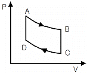
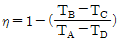
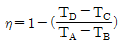
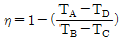
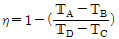
(정답률: 72%)
38. 랭킨 사이클의 터빈에서 가장 이상적인 상태변화는 어느 것인가?
- 등온변화
- 비가역 단열변화
- 폴리트로픽 변화
- 가역 단열변화
(정답률: 66%)
39. 단위량의 연료를 포함한 이론 혼합기가 완전반응을 하였을 때 발생하는 연소가스량을 무엇이라 하는가?
- 이론연소가스량
- 이론건조가스량
- 이론습윤가스량
- 이론건조연소가스량
(정답률: 78%)
40. 다음 중 분해연소에 대하여 가장 옳게 설명한 것은?
- 연료가 그 표면으로부터 증발되면서 연소하는 것
- 공기가 직접 탄소 표면에 접촉되면서 연소가 계속되는 것
- 연료가 가열로 인하여 분해되면서 가연성 혼합기체가 되어 연소하는 것
- 대기 중의 산소가 화염의 표면으로부터 중심으로 확산하면서 연소하는 것
(정답률: 69%)
3과목: 가스설비
41. 다음 중 가스 액화사이클의 종류에 속하지 않는 것은?
- 클라우드식
- 필립스식
- 크라시우스식
- 린데식
(정답률: 59%)
42. 초저온장치의 분말진공단열법에서 충전용 분말로 사용되지 않는 것은?
- FRP(섬유강화플라스틱)
- 규조토
- 알루미늄분말
- 펄라이트
(정답률: 60%)
43. 다음 중 가연성가스 용기의 도색 표시가 잘못된 것은? (단, 용기는 공업용이다.)
- 액화탄산가스 : 청색
- 아세틸렌 : 황색
- 액화암모니아 : 회색
- 액화염소 : 갈색
(정답률: 74%)
44. 고압가스 설비의 두께는 상용압력의 몇 배 이상의 압력에서 항복을 일으키지 않아야 하는가?
- 1.5배
- 2배
- 2.5배
- 3배
(정답률: 68%)
45. 냄새가 나는 물질(부취제)의 주입방법이 아닌 것은?
- 적하식
- 증기주입식
- 고압분사식
- 회전식
(정답률: 71%)
46. 도시가스 공장에 내용적 20m3의 저장 탱크가 2 개 설치되어 있다. 총 저장능력은 몇 톤(ton)인가? (단, 비중은 0.71이다.)
- 15.75
- 20.36
- 25.56
- 35.75
(정답률: 54%)
47. LNG 를 도시가스원료로 사용할 경우의 장점에 대한 설명으로 틀린 것은?
- 냉열 이용이 가능하다.
- 안정된 연소상태를 얻을 수 있다.
- 기화시켜 사용할 경우 정제설비가 필요하다.
- 메탄가스가 주성분으로 공기보다 가벼워 폭발위험이 적다.
(정답률: 60%)
48. LNG 냉열 이용에 대한 설명으로 틀린 것은?
- LNG를 기화시킬 때 발생하는 한냉을 이용하는 것이다.
- LNG 냉열로 전기를 생산하는 발전에 이용할 수 있다.
- LNG는 온도가 낮을수록 냉열이용량은 증가한다.
- 국내에서는 LNG 냉열을 이용하기 위한 타당성조사가 활발하게 진행 중이며 실제 적용한 실적은 아직 없다.
(정답률: 76%)
49. 전양정 30m, 유량 1.5m3/min인 펌프의 효율이 80%인 경우 펌프의 축동력 L[PS] 및 소요전력 W[kW]은 각각 얼마인가?
- L＝10.3, W＝7.4
- L＝12.5, W＝9.2
- L＝15.3, W＝11.3
- L＝15.7, W＝15.2
(정답률: 73%)
50. 다음 중 공기액화분리로 제조하지 않는 것은?
- O2
- N2
- Ar
- CO
(정답률: 59%)
51. LP 가스 배관의 단열을 위한 보냉재의 재질 선정조건으로 틀린 것은 ?
- 열전도율이 좋을 것
- 흡습성이 적을 것
- 불연성일 것
- 시공성이 좋을 것
(정답률: 72%)
52. 10℃에서 절대압이 0.9MPa인 기체 상 태의 질소가스가 있다. 이 가스가 법적으로 고압가스에 해당되는지의 여부를 판단한 것으로 옳은 것은?
- 0.88MPa·g로서 고압가스가 아니다.
- 0.88MPa·g로서 고압가스이다.
- 1.08MPa·g로서 고압가스가 아니다.
- 1.08MPa·g로서 고압가스이다.
(정답률: 53%)
53. 다음 [보기]에서 설명하는 암모니아 합성탑의 종류는?
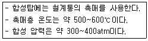
- 파우서법
- 하버-보시법
- 클라우드법
- 구우데법
(정답률: 62%)
54. 다음 중 캐비테이션의 발생조건이 아닌 것은?
- 관경이 작은 경우
- 관속의 유량이 증가한 경우
- 관내의 온도가 증가하였을 경우
- 펌프의 위치가 흡입액면보다 너무 낮게 설치될 경우
(정답률: 70%)
55. 연소기의 안전장치 중 소화안전장치에 해당되지 않는 것은?
- 광전관식
- 열전대식
- 플레임로드식
- 바이메탈식
(정답률: 53%)
56. 고압가스안전관리법에 의한 고압가스 관련 설비에 해당 되지 않는 것은?
- 독성가스배관용 밸브
- 기화장치
- 고압배관
- 자동차용 가스 자동주입기
(정답률: 42%)
57. 다음 중 가스의 호환성을 판정할 때 사용되는 것은?
- Reynolds 수
- Webbe지수
- Nueselt 수
- Mach 수
(정답률: 75%)
58. 원통형 케이싱 안에 편심 회전자가 있고 그 홈 속에 판상의 깃이 있어 이의 원심력 혹 은 스프링 장력에 의해 벽에 밀착하면서 액체를 압송하는 방식의 펌프는?
- 기어펌프
- 나사펌프
- 베인펌프
- 스크류펌프
(정답률: 64%)
59. 압력이 일정할 때, 20℃에서의 부피가 2배로 될 때 온도는 몇 ℃인가?
- 313℃
- 329℃
- 450℃
- 586℃
(정답률: 48%)
60. 염소 주입설비(Chlorinator) 중 염소누출의 재해를 막기 위해 설치되는 흡수탑에서 사용되는 반응액으로 적당한 것은?
- 가성소다 용액
- 염산 용액
- 암모니아 용액
- 벤젠 용액
(정답률: 61%)
4과목: 가스안전관리
61. 고압가스 일반제조의 시설 및 기술기준으로 틀린 것은?
- 산소의 가스설비 또는 저장설비는 화기와 5m 이상의 거리를 두어야 한다.
- 가연성가스 제조시설의 고압가스설비 외면으로부터 산소 제조시설의 고압가스설비와 10m 이상의 거리를 두어야 한다.
- 가연성가스 제조시설의 고압가스설비 외면으로부터 다른 가연성가스 제조시설의 고압가스설비와 5m 이상의 거리를 두어야 한다.
- 가스설비 외면으로부터 화기(그 설비 안의 것을 제외한다.)를 취급하는 장소까지 우회거리 2m 이상의 거리를 두어야 한다.
(정답률: 44%)
62. 정전기의 발생에 영향을 주는 요인에 대한 설명으로 옳지 않은 것은?
- 물질의 표면상태가 원활하면 발생이 적어진다.
- 물질표면이 기름 등에 의해 오염되었을 때는 산화, 부식에 의해 정전기가 발생한다.
- 정전기의 발생은 처음 접촉, 분리가 일어났을 때 최대가 된다.
- 분리속도가 빠를수록 정전기의 발생량은 적어진다.
(정답률: 75%)
63. 다음 가연성가스 중 위험도가 가장 큰 것은?
- 프로판
- 부탄
- 에틸렌
- 산화에틸렌
(정답률: 66%)
64. 다음 중 가연성가스이지만 독성이 없는 가스는?
- NH3
- CO
- HCN
- C3H6
(정답률: 65%)
65. 일반고압가스 제조시설에서 몇 m3 이상의 가스를 저장하는 것에 가스방출장치를 설치하여야 하는가?·
- 5
- 10
- 20
- 50
(정답률: 61%)
66. 가스누출검지경보장치의 성능기준에 대한 설명으로 틀린 것은?
- 가연성가스의 경보농도는 폭발하한계의 1/4 이하로 할 것.
- 독성가스의 경보농도는 TLV-TWA 기준농도 이하로 할 것.
- 경보기의 정밀도는 경보농도 설정치에 대하여 가연성가스용에 있어서는 ±25% 이하로 할 것.
- 지시계의 눈금은 독성가스는 0 부터 TLV-TWA 기준농도의 5배 값을 눈금범위에 명확하게 지시하는 것일 것.
(정답률: 57%)
67. LPG 압력조정기 중 자동절체식 일체형 저압조정기의 조정 압력으로 옳은 것은?
- 2.3~3.3kPa
- 2.55~3.3kPa
- 5~7kPa
- 57~83.0kPa
(정답률: 69%)
68. 액화석유가스를 사용하는 가스배관의 이음부와 전기설비와의 이격거리를 나타낸 것 중 바르게 연결된 것은? (단, 배관이음부는 용접이 음매를 제외한다.)
- 전기계량기 - 60㎝ 이상
- 전기접속기 - 20㎝ 이상
- 전기개폐기 - 30㎝ 이상
- 절연조치 하지 않은 전선 - 10㎝ 이상
(정답률: 66%)
69. 액화석유가스의 집단 공급시설 중 소형 저장탱크에는 그 내용적의 몇 % 를 넘지 않도록 충전하여야 하는가?
- 0%
- 85%
- 90%
- 95%
(정답률: 67%)
70. 다음 중 의료용 산소용기의 도색 및 표시가 바르게 된 것은?
- 백색으로 도색 후 흑색 글씨로 산소라고 표시한다.
- 녹색으로 도색 후 백색 글씨로 산소라고 표시한다.
- 백색으로 도색 후 녹색 글씨로 산소라고 표시한다.
- 녹색으로 도색 후 흑색 글씨로 산소라고 표시한다.
(정답률: 79%)
71. 도시가스제조소의 가스누출통보설비로서 가스경보기 검지부의 설치장소로 옳은 곳은?
- 증기, 물방울, 기름 섞인 연기 등의 접촉부위
- 주위의 온도 또는 복사열에 의한 열이 40도 이하가 되는 곳.
- 설비 등에 가려져 누출가스의 유동이 원활하지 못한 곳.
- 차량 또는 작업 등으로 인한 파손 우려가 있는 곳.
(정답률: 69%)
72. 배기가스의 실내 누출로 인하여 질식사 고가 발생하는 것을 방치하기 위하여 반드시 전용 보일러실에 설치하여야 하는 가스보일러는?
- 강제급·배기식 (FF) 가스보일러
- 반밀폐식 가스보일러
- 옥외에 설치한 가스보일러
- 전용 급기통을 부착시키는 구조로 검사에 합격한 강제배기식 가스보일러
(정답률: 60%)
73. 도시가스 배관에 대한 용어 정의가 옳지 않게 짝지어진 것은?
- 배관 - 본관, 공급관 및 내관
- 본관 - 도시가스제조사업소의 부지경계에서 정압기까지에 이르는 배관
- 사용자 공급관 - 공급관 중 가스사용자가 소유하거나 점유하고 있는 토지 안에 설치된 도시가스사업자의 가스차단 장치에서 가스사용자가 구분하여 소유하거나 점유하는 건축물의 외벽에 설치된 계량기의 전단밸브까지에 이르는 배관
- 내관 - 공동주택 등으로서 가스사용자가 구분하여 소유하거나 점유하고 있는 건축물의 외벽에 계량기가 설치된 경우에는 그 계량기의 전단밸브, 계량기가 건축물의 내부에 설치된 경우에는 건축물의 외벽에서 연소기까지에 이르는 배관
(정답률: 60%)
74. 가스용 염화비닐 호스의 안지름을 종류별로 나열한 것 중 옳은 것은?
- 1종 : 6.3±0.7㎜
- 2종 : 9.5±0.9㎜
- 3종 : 12.7± 1.2㎜
- 4종 : 25.4±1.27㎜
(정답률: 66%)
75. 고압가스 운반기준에 대한 설명으로 틀린 것은?
- 염소와 아세틸렌, 암모니아는 동일차량에 적재운반해서는 아니 된다.
- 2개 이상의 탱크를 동일 차행에 고정 운반할 때는 탱크마다 탱크 주밸브를 설치하여야 한다.
- 가연성 가스와 산소는 동일차량에 적재 운반할 수 없다.
- 충전용기를 차량에 적재하여 운반하는 때에는 “위험 고압가스”라는 표시를 하여야 한다.
(정답률: 61%)
76. 산소기체가 40ℓ의 용기에 27'℃, 150 atm으로 압축 저장되어 있다. 이 용기에는 몇 kg의 산소가 충전되어 있는가?
- 6.8
- 7.8
- 9.6
- 10.6
(정답률: 53%)
77. 냉동기 냉매설비의 내압시험 압력의 기준은?
- 누출시험 압력의 1.5배 이상의 압력
- 상용 압력의 1.5배 이상의 압력
- 설계 압력의 1.5배 이상의 압력
- 최대사용 압력의 1.5배 이상의 압력
(정답률: 59%)
78. 소형저장탱크에 의한 액화석유가스 사용시설에서 호스의 길이는 연소기까지 얼마로 하여야 하는?
- 3m 이내
- 3m 이상
- 5m 이내
- 5m 이상
(정답률: 45%)
79. 도시가스사업자는 공급하는 도시가스의 유해성분, 열량, 압력 및 연소성을 측정하여야 하는데 이 중 열량을 측정할 때의 시간 및 압력 측정의 위치가 각각 바르게 짝지어진 것은?
- 6시 30분부터 9시 사이 - 가스공급시설의 끝부분의 배관
- 매 2시간마다 - 가스홀더 출구
- 6시 30부터 20시 30분 사이 - 정압기 출구
- 17시부터 20시 30분 사이 - 배송기 출구
(정답률: 64%)
80. 가연성가스란 연소범위 중 하한농도가 몇 % 이하이거나, 상한과 하한의 차이가 몇 % 이상인 가스를 말하는가?
- 20, 10
- 10, 20
- 30, 10
- 20, 30
(정답률: 65%)
5과목: 가스계측기기
81. 지름 75mm, 속도계수가 0.96인 노즐 이 지름 200mm인 관에 부착되어 물이 분출되고 있다. 관의 수두가 8.4m일 때 노즐 출구에서의 유속은 약 몇 m/s인가?
- 6.2
- 12.3
- 24.6
- 48.2
(정답률: 48%)
82. 요구되는 입력조건이 만족되면 그에 상응하는 출력신호가 발생되는 형태를 요구하는 것으로 입출력이 1:1 대응관계에 있는 시스템은 어떤 제어인가?
- 파일럿 제어
- 메모리 제어
- 조합 제어
- 시퀀스 제어
(정답률: 65%)
83. 베크만 온도계는 어떤 종류의 온도계에 해당하는가?
- 바이메탈 온도계
- 유리 온도계
- 저항 온도계
- 열전대 온도계
(정답률: 49%)
84. 다음 중 표준 유동율을 결정하는 방법이 아닌 것은?
- 용량 측정방법
- PVTt 측정방법
- Build Up 방법
- 유속분포 측정방법
(정답률: 45%)
85. 가스미터의 설치에 대한 설명으로 옳지 않은 것은?
- 화기와는 2m 이상의 우회거리를 유지하여야 한다.
- 수시로 환기가 가능한 장소에 설치하여야 한다.
- 지면으로부터 1m 이상 높이에 노출시켜 설치하여야 한다.
- 직사광선이나 빗물을 받을 우려가 있는 곳에 설치하는 경우에는 격납상자 내에 설치하고, 격납상자 내에 설치시는 설치 높이에 제한이 없다.
(정답률: 43%)
86. 할로겐, 과산화물 및 니트로기와 같은 전기음성도가 큰 작용기를 포함하는 분자에 특히 감도가 좋은 가스크로마토그래피 검출기는?
- 불꽃열이온검출기
- 불꽃이온화검출기
- 전자포획검출기
- 열전도도검출기
(정답률: 62%)
87. 햄프슨식이 대표적이며 고압의 밀폐탱크에 적합한 액면계는?
- 차압석 액면계
- 기포식 액면계
- 방사선식 액면계
- 초음파식 액면계
(정답률: 64%)
88. 막식가스미터의 부동현상에 대한 설명으로 가장 옳은 것은?
- 가스가 미터를 통과하지만 지침이 움직이지 않는 고장
- 가스가 미터를 통과하지 못하는 고장
- 가스가 누출되고 있는 고장
- 가스가 통과될 때 미터가 이상음을 내는 고장
(정답률: 81%)
89. 다음 중 편차에 대하여 가장 잘 설명한 것은?
- 목표치와 입력량 대한 차를 말한다.
- 기준압력과 사용압력의 차를 말한다.
- 목표치와 제어량의 차를 말한다.
- 목표치와 측정량의 차를 말한다.
(정답률: 43%)
90. 어떤 가스의 유량을 막식가스미터로 측정하였더니 65ℓ이었다. 표준가스미터로 측정하였더니 71ℓ이었다면 이 가스미터의 기차는 약 몇 %인가?
- -8.4%
- -9.2%
- -10.9%
- -12.5%
(정답률: 54%)
91. 경사가 완만한 관에 의하여 교축되므로 압력손실이 적고 협잡물을 포함한 유체의 측정에 적합한 유량계는?
- 피토관 유랑계
- 플로노즐 유량계
- 벤투리 유량계
- 리피스 유랑계
(정답률: 46%)
92. 보일러에서 여러 대의 버너를 사용하여 연소실의 부하를 조절하는 경우 버너의 특성 변화에 따라 버너의 대수를 수시로 바꾸는데, 이때 사용하는 제어방식으로 가장 적당한 것은?
- 다변수제어
- 병렬제어
- 캐스케이드제어
- 비율제어
(정답률: 72%)
93. 검교정 설비표준시스템에서 소닉 노즐 (sonic nozzle)의 특성에 크게 영향을 주는 스월 (swirl)을 줄이기 위하여 설치하는 스트레이너(strainer)의 적당한 설치 위치는?
- 노즐(nozzle) 입구에서 3D 이상 지점
- 노즐(nozzle) 입구에서 5D 이상 지점
- 노즐(nozzle) 입구에서 10D 이상 지점
- 노즐(nozzle) 입구에서 20D 이상 지점
(정답률: 60%)
94. 차압식 유랑계로 유량을 측정하는 경우 교축기구 전후의 차압이 20.25Pa일 때 유량이 25m3/h 이었다. 차압이 10.50Pa일 때 유량은 약 몇 m3/h인가?
- 13
- 18
- 35
- 48
(정답률: 39%)
95. 다음 중 일반적인 가스미터의 종류가 아닌 것은?
- 스크류석 가스미터
- 막식 가스미터
- 습식 가스미터
- 추량식 가스미터
(정답률: 70%)
96. 다음 중 연당지로 검지할 수 있는 가스는?
- COCl2
- CO
- H2S
- HCN
(정답률: 69%)
97. 서미스터(thermistor)의 특징을 바르게 설명한 것은?
- 온도계수가 작으며 응답속도가 빠르다.
- 온도상승에 따라 저항치가 감소한다.
- 감도는 크나 미소한 온도차 측정이 어렵다.
- 수분 흡수 시에도 오차가 발생하지 않는다.
(정답률: 56%)
98. 가스미터에 다음과 같이 표기 되어 있다. 이에 대한 설명으로 옳은 것은?
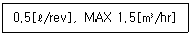
- 가스미터의 감도유량이 0.5리터이며 사용 최대유량은 시간당 1.5m3이다.
- 가스미터의 감도유량이 0.5리터이며 오차의 최대값은 시간당 1.5m3이다.
- 계량실의 1 주기 체적이 0.5리터이며 오차의 최대값은 시간당 1.5m3이다.
- 계량실의 1 주기 체적이 0.5리터이며 사용 최대유량은 시간당 1.5m3이다.
(정답률: 56%)
99. 반도체식 가스누출 검지기의 특징에 대한 설명으로 옳은 것은?
- 안정성은 떨어지지만 수명이 길다.
- 가연성가스 이외의 가스는 검지할 수 없다.
- 응답속도를 빠르게 하기 위해 가열해 준다.
- 미량가스에 대한 출력이 낮으므로 감도는 좋지 않다.
(정답률: 65%)
100. 연속 동작에 의한 제어 방식이 아닌 것은?
- 다위치 동작제어
- 비례 동작제어
- 적분 동작제어
- 중합 동작제어
(정답률: 50%)